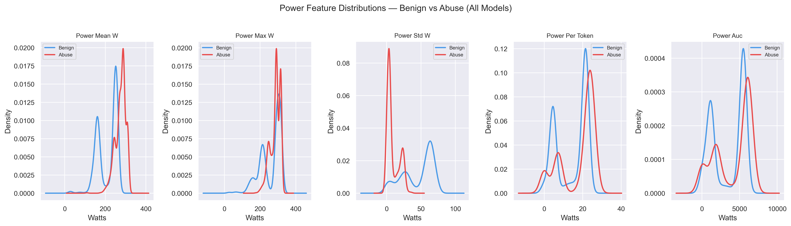
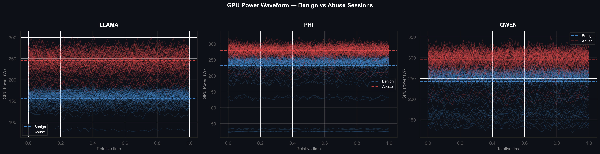
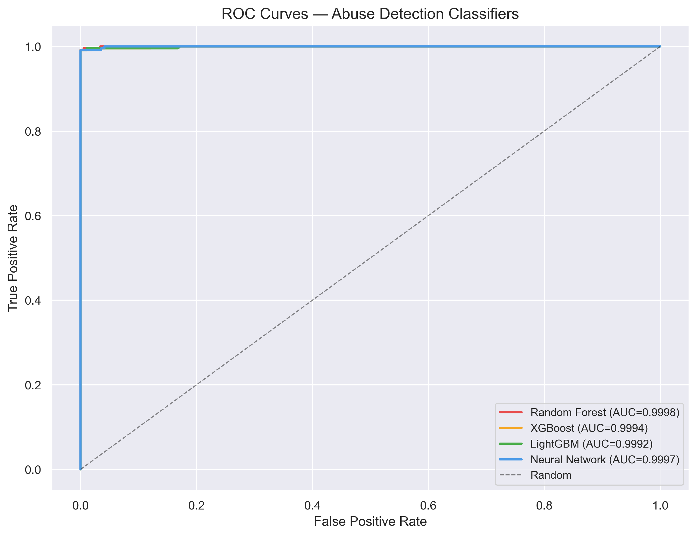
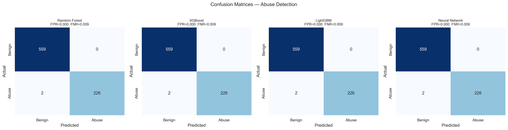
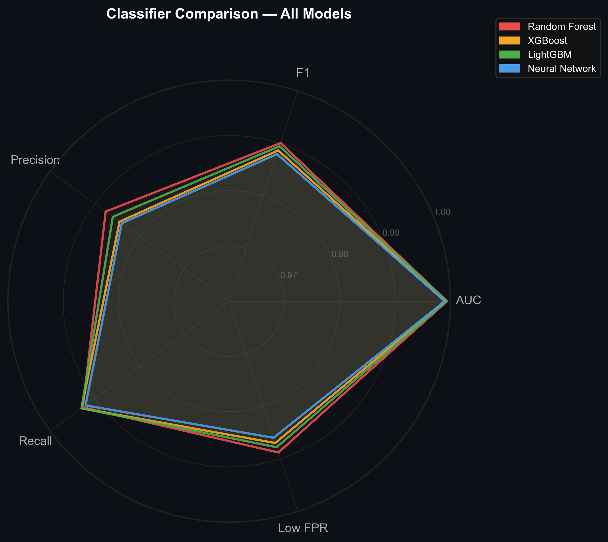
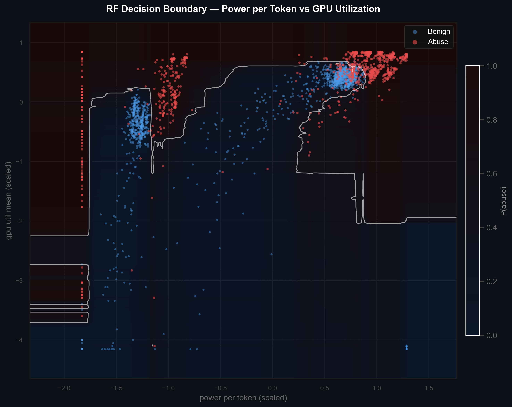
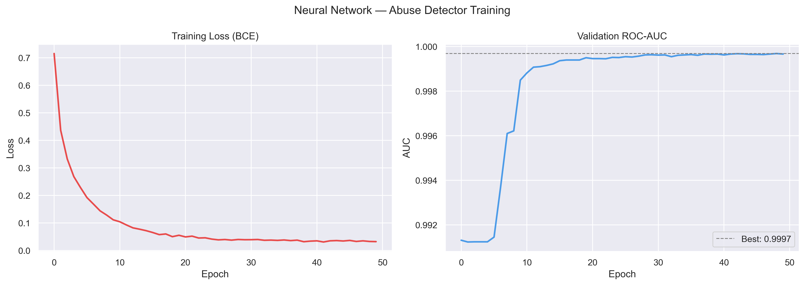
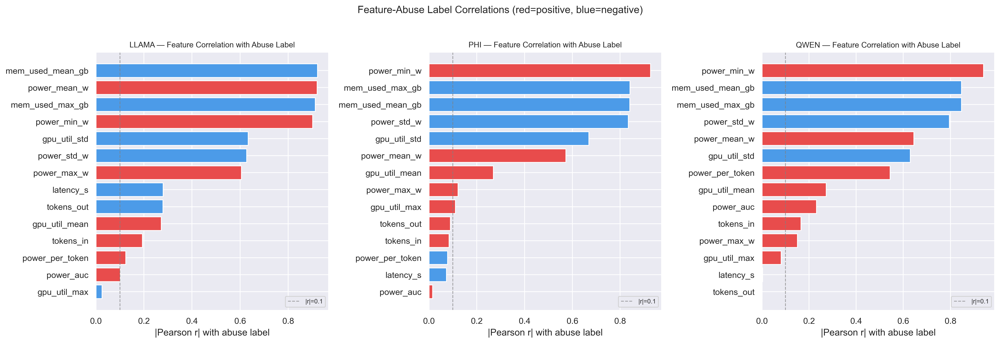
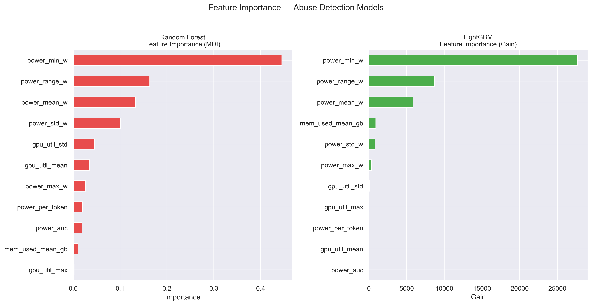
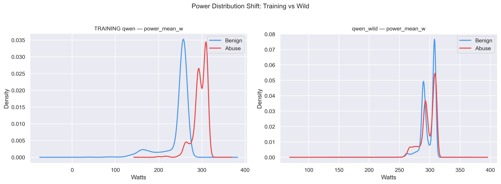

// Research Paper · April 2026
LLM Abuse Detection via GPU Power Telemetry
Hardware Signal Classification of Adversarial Inference Sessions
Download Full Paper (PDF) ↓ GitHub →Abstract
Content-based detection of abusive large language model (LLM) usage requires storing and analyzing prompt and response text, introducing regulatory, privacy, and security risks. This work investigates whether GPU hardware telemetry collected passively during inference contains sufficient signal to classify sessions as benign or abusive without accessing content.
Telemetry was collected across 3,931 labeled inference sessions spanning three open-source models (Llama-3.2-1B, Phi-3.5-mini, and Qwen2.5-7B), using HarmBench as the source of harmful prompts and LMSYS-Chat-1M as the benign corpus. Classifiers trained on an 11-feature telemetry-only representation achieve near-perfect in-distribution performance (AUC ≥ 0.999, FPR = 0.000) and generalize across model architectures under shared hardware conditions.
However, performance degrades substantially under distribution shift — evaluation on 16,000 out-of-distribution sessions from WildJailbreak results in FPR ≈ 0.999, due to a shift in benign power baselines. These results demonstrate that GPU telemetry contains a strong but environment-sensitive signal for detecting abusive LLM inference, suggesting its role as a complementary, privacy-preserving component within a broader defense ensemble.
Key Findings
Abusive sessions consistently draw significantly more GPU power than benign queries across all tested models.
All four classifiers achieve AUC ≥ 0.999 with FPR = 0.000 on held-out in-distribution test data.
Dataset spans Llama-3.2-1B, Phi-3.5-mini, and Qwen2.5-7B with HarmBench harmful and LMSYS-Chat-1M benign prompts.
The Signal: Power Feature Distributions
Abusive sessions impose a distinct computational load during harmful content generation. Across all three models, power-related features show clear separation between benign (blue) and abusive (red) sessions — with abusive sessions shifted toward higher wattage and tighter variance, consistent with sustained compute demand.

Fig 1. KDE plots of power features (mean, max, std, per-token, AUC) across all models. Abusive sessions cluster at higher wattage with lower variance.
The waveform overlay below plots 80 sampled power traces per class across normalized session time for each model. Abusive sessions (red) run consistently hotter throughout, while benign sessions (blue) fluctuate at a lower baseline. This temporal persistence makes the signal robust to single-sample noise.

Fig 2. GPU power waveforms sampled across normalized session time for LLAMA, Phi, and QWEN. Abusive sessions (red) sustain elevated power levels throughout; benign sessions (blue) show lower, more variable baselines.
Classifier Performance
Four classifiers — Random Forest, XGBoost, LightGBM, and a Neural Network — were trained on the 11-feature telemetry representation. All four achieve near-perfect ROC curves under in-distribution conditions, with confusion matrices confirming zero false positives across the test set.

Fig 3. ROC curves for all four classifiers. All achieve AUC ≥ 0.999.

Fig 4. Confusion matrices. FPR = 0.000, FNR = 0.009 on held-out data.
The radar chart gives a direct side-by-side comparison across five key metrics. Near-identical polygons confirm that signal quality — not model choice — drives performance.

Fig 5. Radar chart comparing all four classifiers on F1, Precision, AUC, Recall, and Low FPR. Near-identical polygons indicate the signal itself is the dominant factor.
The decision boundary plot maps the Random Forest's learned separation in a 2D feature slice — power per token vs. GPU utilization. Even two features alone carry substantial discriminative power.

Fig 6. Random Forest decision boundary in the power-per-token × GPU utilization space. White contours show abuse probability transitions; red = abusive, blue = benign.

Fig 7. Neural network training loss (BCE) and validation ROC-AUC over 50 epochs. Best AUC = 0.9997, converging by epoch ~10.
What Drives the Signal
power_min_w, power range, and mean power are the dominant features across both tree-based models. Abusive sessions sustain higher baseline power throughout inference, raising the floor and compressing variance relative to benign queries.

Fig 8. Pearson correlation between each telemetry feature and the abuse label across all three models. Power features show the strongest and most consistent signal.

Fig 9. Feature importance for Random Forest (MDI) and LightGBM (Gain). Power floor and range metrics dominate both models.
The Limitation: Distribution Shift
Out-of-distribution evaluation on 16,000 WildJailbreak sessions reveals a critical failure mode. The benign power baseline in the wild dataset overlaps heavily with the abusive range seen during training — the classifier's learned boundary no longer separates the classes. This is an environment-sensitivity problem, not a model problem, and points toward recalibration or ensemble approaches as the path forward.

Fig 10. Training vs. WildJailbreak power distributions for Qwen2.5-7B. The benign baseline shifts into the abusive range, causing near-total classifier breakdown (FPR ≈ 0.999).
Implications
This approach offers three concrete benefits over content-based detection: it eliminates the sensitive prompt data store entirely (reducing regulatory audit scope under the EU AI Act and CCPA), creates a concentrated attack surface on the detection infrastructure rather than the inference stack, and provides an early-termination signal detectable within the first inference window of a session.
Because the detection signal derives from hardware physics rather than prompt semantics, an adversary cannot eliminate the underlying compute cost — though they may potentially reshape telemetry signatures by altering query structure. GPU telemetry is best positioned as a complementary, privacy-preserving component within a broader defense ensemble.
Read the Full Paper
Full methodology, results tables, and appendices available in the PDF.
Download PDF ↓